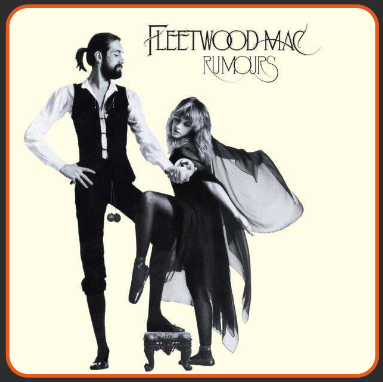
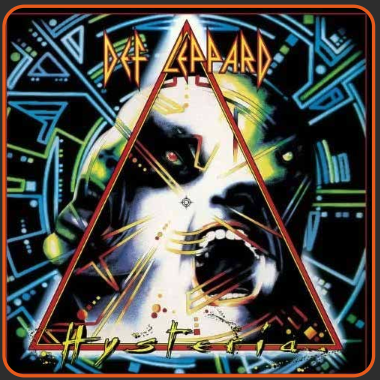
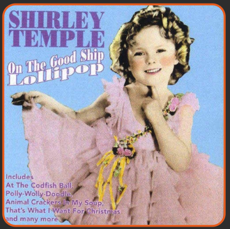

“Dreams”
by Fleetwood Mac
Category
More songs about unhealthy relationships
Continue Discovery »
“Misery”
by Maroon 5
Category
More songs written or produced by Mutt Lange
Continue Discovery »

“Pour Some Sugar On Me”
by Def Leppard
Category
More songs with food in the title
Continue Discovery »

“On the Good Ship Lollipop”
by Shirley Temple
Category
More songs recorded by an artist who was very young
Continue Discovery »